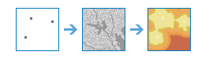

Аналіз растрів дозволяє виконувати аналіз великих наборів растрових даних, використовуючи ArcGIS Image Server. Це дозволяє аналізувати більші обсяги даних з більшою швидкістю шляхом оптимального використання потужності сервера.Наборами інструментів, доступними на поточний момент через веб-середовище користувача Портал для ArcGIS, є Підсумування даних, Аналіз закономірностей, Використання наближеності, Аналіз зображень, Аналіз ландшафту, Керування даними, Глибоке навчання та Багатовимірний аналіз.
Підсумувати дані
Ці інструменти використовуються для розрахунку статистики для растрового шару в межах визначених вами кордонів області (зонах).
- Підсумувати растр в межах обчислює статистику для растрових осередків, які укладаються у визначені границі області.
- Зональна статистика як таблиця підсумовує значення растру в межах зон іншого набору даних та звітує результати в таблиці.
Підсумувати растр в межах |

|
Цей інструмент підсумовує значення растру в межах зон іншого набору даних.
Зональна статистика як таблиця |

|
Цей інструмент підсумовує значення растру в межах зон іншого набору даних та звітує результати в таблиці.
Analyze Patterns
These tools help you identify, quantify, and visualize spatial patterns in your data.
- Calculate Density takes known quantities of some phenomenon and creates a density map by spreading these quantities across the map.
- Interpolate Points predicts values at new locations based on measurements found in a collection of points.
Розрахувати щільність |

|
Density analysis takes known quantities of some phenomenon and creates a density map by spreading these quantities across the map. You can use this tool, for example, to show concentrations of lightning strikes or tornadoes, access to health care facilities, and population densities.
Interpolate Points |

|
This tool allows you to predict values at new locations based on measurements found in a collection of points. The tool takes point data with values at each point and returns areas classified by predicted values. You can use this tool, for example, to predict rainfall levels across a watershed based on measurements taken at individual rain gauges.
Використовувати наближеність
Ці інструменти допомагають відповісти на одне з найбільш поширених питань, пов’язаних з просторовим аналізом: "Що знаходиться поруч з чим?" і "Яким є найоптимальніший шлях?"
- Розрахувати відстань розраховує Евклідову відстань, напрямок і розміщення на основі одного джерела або набору джерел.
- Визначити мережу з оптимальної вартістю подорожі обчислює мережу з оптимальною вартістю переміщення на основі набору вхідних регіонів.
- Визначити шлях вартості подорожі як полілінію розраховує шлях полілінії з найменшою вартістю між відомими місцями призначення та джерелами.
- Сумарна відстань розраховує сумарну відстань для кожного осередку до джерел, враховуючи відстань по прямій, вартісну відстань, істинну відстань по поверхні, а також вертикальні та горизонтальні фактори вартості.
- Розподіл відстані розраховує розподіл відстані для кожного осередку до наданих джерел на основі відстані по прямій, вартісної відстані, істинної відстані по поверхні, а також вертикальних і горизонтальних факторів вартості.
- Оптимальний шлях як лінія розраховує оптимальний шлях від місць призначення до джерел як лінію.
- Оптимальний шлях як растр розраховує оптимальний шлях від місць призначення до джерел як лінію.
- Оптимальні регіональні зв'язки розраховує оптимальну мережу зв'язків між двома або більше вхідними регіонами.
Calculate Distance |

|
Цей інструмент обчислює Евклідову відстань, напрямок і розміщення на основі одного чи кількох джерел.
Determine Optimum Travel Cost Network |

|
Цей інструмент обчислює мережу з оптимальною вартістю переміщення на основі набору вхідних регіонів.
Determine Travel Cost Path As Polyline |

|
Цей інструмент розраховує шлях полілінії з найменшою вартістю між місцями призначення та джерелами.
Сумарна відстань |
 |
Цей інструмент розраховує сумарну відстань для кожного осередку до джерел, враховуючи відстань по прямій, вартісну відстань, істинну відстань по поверхні, а також вертикальні та горизонтальні фактори.
Розподіл відстані |

|
Цей інструмент розраховує розподіл відстані для кожного осередку до наданих джерел на основі відстані по прямій, вартісної відстані, істинної відстані по поверхні, а також вертикальних і горизонтальних факторів.
Оптимальний шлях як лінія |

|
Цей інструмент розраховує оптимальний шлях від місць призначення до джерел як лінію.
Оптимальний шлях як растр |

|
Цей інструмент розраховує оптимальний шлях від місць призначення до джерел як растр.
Оптимальні регіональні зв'язки |

|
Цей інструмент розраховує оптимальну мережу зв'язків між двома або більше вхідними регіонами.
Аналізувати зображення
Наступний інструмент у категорії інструментів Аналіз зображень допомагає аналізувати зображення:
- Моніторинг рослинності виявляє відносний рослинний покрив на зображенні на основі арифметичних операцій над каналами. Доступні декілька індексів рослинності для аналізу зображень.
Контролювати рослинність |

|
Виконує арифметичну операцію над каналами багатоканального растрового шару для виявлення інформації про рослинний покрив.
Analyze Terrain
These tools help you analyze raster surfaces.
- Calculate Slope calculates the steepness of terrain.
- Derive Aspect calculates the direction of steepest slope for each location.
- Create Viewshed identifies what can be seen from any point on the landscape.
- Watershed calculates the contributing area above identified location(s) on a surface.
Calculate Slope |

|
Identifies a surface that shows the slope of the input elevation data. Slope represents the rate of change of elevation for each digital elevation model (DEM) cell.
Derive Aspect |

|
Identifies the downslope direction of the maximum rate of change in value from each cell to its neighbors. Aspect can be thought of as the slope direction.
Create Viewshed |

|
Determines the locations on a raster surface that are visible to a set of observers.
Водозбірна область |

|
Determines the contributing area above a set of cells in a raster.
Керування даними
Ці інструменти використовуються для щоденного керування географічними даними та поєднання даних перед виконанням аналізу.
- Виділити растр вирізає фрагменти із набору растрових даних для подальшого аналізу.
- Повторно перетворити значення змінює значення в осередках растру.
- Перетворити об'єкт в растр раструє векторні дані.
- Перетворити растр в об’єкт векторизує растрові дані.
- Зразок витягає дані в визначених місцях розташування з растру або набору растрів.
Виділити растр |

|
Виділяє осередки із растру на основі значення, форми або екстенту іншого набору даних.
Повторно перетворити значення |

|
Змінює значення окремих осередків або діапазонів осередків.
Перетворити об'єкт в растр |

|
Створює новий набір растрових даних із існуючого набору класів об'єктів.
Перетворити растр в об'єкт |

|
Створює новий набір класів об'єктів із існуючого набору растрових даних.
Зразок |

|
Створює таблицю або клас точкових об’єктів зі значень даних в визначених місцях розташування, що витягуються з растру або набору растрів.
Глибоке навчання
Ці інструменти використовуються для виявлення або класифікування конкретних об’єктів на зображенні або для класифікування пікселів в наборі растрових даних. Глибоке навчання це різновид методу машинного навчання штучного інтелекту, який виявляє об’єкти на зображенні за допомогою набору шарів у нейронній мережі, де кожний шар може виділяти один або більше унікальних об’єктів на зображенні. Ці інструменти використовують модель, навчену виявляти особливі об’єкти у сторонніх середовищах глибокого навчання, таких як TensorFlow, CNTK і Keras, і вихідні об’єкти або карти класів.
- Класифікувати пікселі, використовуючи глибоке навчання створює класифікований растр, використовуючи навчену модель глибокого навчання.
- Виявляти об’єкти, використовуючи глибоке навчання створює клас об’єктів, який містить об’єкти, знайдені у вхідному растрі, використовуючи навчену модель глибокого навчання.
- Класифікувати об'єкти, використовуючи глибоке навчання створює клас об'єктів або таблицю, в якій кожному вхідному об'єкту у вхідному растрі призначається напис класу з використанням навченої моделі глибокого навчання.
Класифікувати пікселі, використовуючи глибоке навчання |

|
Цей інструмент запускає навчену модель глибокого навчання на вхідному растрі, щоб створити класифікований растр, де кожному дійсному пікселю буде призначений надпис класу.
Виявити об'єкти, використовуючи глибоке навчання |

|
Цей інструмент запускає навчену модель глибокого навчання на вхідному растрі, щоб створити клас об’єктів, в якому містяться знайдені ним об’єкти. Об’єктами можуть бути обмежуючі рамки або полігони навколо знайдених об’єктів, або точки по центру об’єктів.
Класифікувати об'єкти, використовуючи глибоке навчання |

|
Цей інструмент запускає навчену модель глибокого навчання на вхідному растрі та опціональному класі об’єктів, щоб створити клас об'єктів або таблицю, в якій кожному вхідному об'єкту призначатиметься напис класу.
Багатовимірний аналіз
Інструменти в наборі «Багатовимірний аналіз» дозволяють проводити аналіз наукових даних за наборами змінних і вимірів.
Багатовимірні дані представляють дані, зібрані в різний час, на різних глибинах і висотах. Цей тип даних зазвичай використовується в атмосферних, океанографічних і геологічних дослідженнях. З цим набором інструментів можна здійснювати управління, візуалізацію та аналіз багатовимірних растрових даних в різноманітних форматах, в тому числі netCDF, HDF, GRIB, багатовимірних наборів даних мозаїки, а також формату Esri Cloud Raster Format (CRF).
У таблиці нижче наведені інструменти багатовимірного аналізу з описом кожного з них.
- Агрегувати багатовимірний растр генерує багатовимірний набір растрових даних шляхом агрегування існуючих багатовимірних растрових змінних за виміром.
- Згенерувати багатовимірну аномалію обчислює аномалію для кожного зрізу в багатовимірному растрі для генерування багатовимірного растру.
- Згенерувати растр тренду оцінює тренд для кожного пікселя за виміром для однієї або декількох змінних у багатовимірному растрі.
- Прогнозувати з використанням растру тренду обчислює прогнозований багатовимірний растр з використанням вихідного растру тренду, отриманого за допомогою інструменту Згенерувати растр тренду.
- Шукати статистику аргументу витягує значення виміру або індекс каналу, при якому отримується дана статистика для кожного пікселя в багатовимірному або багатоканальному растрі.
Агрегувати багатовимірний растр |

|
Цей інструмент генерує багатовимірний набір растрових даних шляхом агрегування існуючих багатовимірних растрових змінних за виміром.
Шукати статистику аргументу |

|
Цей інструмент витягує значення виміру або індекс каналу, при якому отримується дана статистика для кожного пікселя в багатовимірному або багатоканальному растрі.
Згенерувати багатовимірну аномалію |

|
Цей інструмент обчислює аномалію для кожного зрізу в багатовимірному растрі для генерування багатовимірного растру.
Згенерувати растр тренду |

|
Цей інструмент оцінює тренд для кожного пікселя за виміром для однієї або більше змінних у багатовимірному растрі.
Прогнозувати з використанням растру тренду |

|
Цей інструмент обчислює прогнозований багатовимірний растр з використанням вихідного растру тренду, отриманого з інструменту Згенерувати растр тренду.